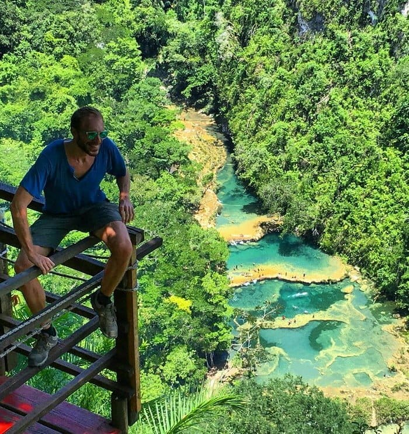
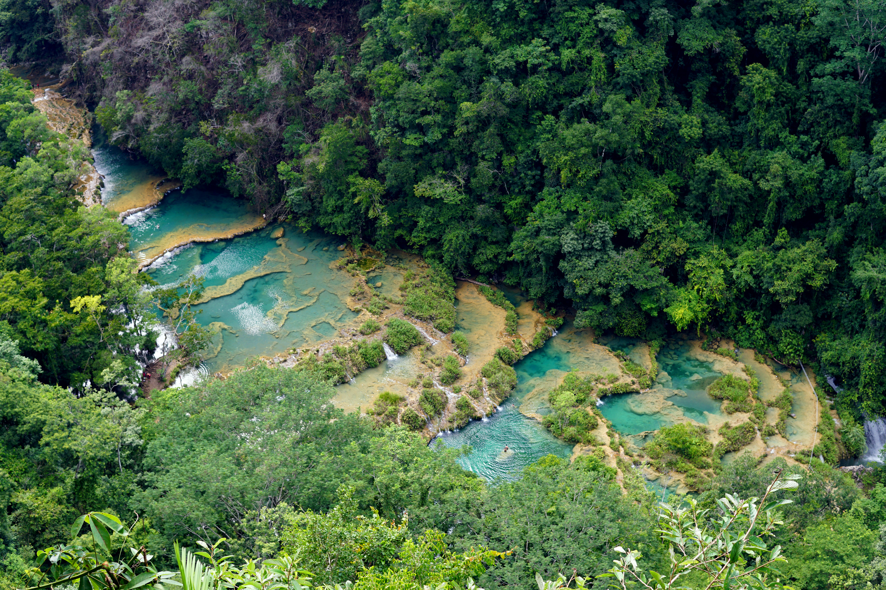

Semuc Champey es uno de los destinos turísticos más impresionantes de Guatemala. Está ubicado en el municipio de Lanquín, departamento de Alta Verapaz, aproximadamente a 350 km de la Ciudad de Guatemala.
Es un monumento natural famoso por sus piscinas de agua color turquesa formadas sobre un puente natural de piedra caliza, bajo el cual fluye el río Cahabón. Entre sus principales atractivos destacan el mirador de Semuc Champey, las pozas naturales, la posibilidad de nadar en aguas cristalinas, recorrer senderos ecológicos y explorar las cercanas Cuevas de K'an Ba.



| Fecha | Horario | Actividad | Lugar |
|---|---|---|---|
| 15/08/2026 | 6:00 a.m. | Salida desde Ciudad de Guatemala | Terminal de buses |
| 15/08/2026 | 1:00 p.m. | Llegada y almuerzo | Lanquín |
| 15/08/2026 | 3:00 p.m. | Recorrido por el mirador | Semuc Champey |
| 15/08/2026 | 4:30 p.m. | Baño en las piscinas naturales | Semuc Champey |
| 16/08/2026 | 8:00 a.m. | Caminata ecológica | Senderos naturales |
| 16/08/2026 | 10:30 a.m. | Visita a las Cuevas de K'an Ba | Lanquín |
| 16/08/2026 | 1:00 p.m. | Almuerzo | Restaurante local |
| 16/08/2026 | 2:30 p.m. | Regreso a Ciudad de Guatemala | Lanquín |